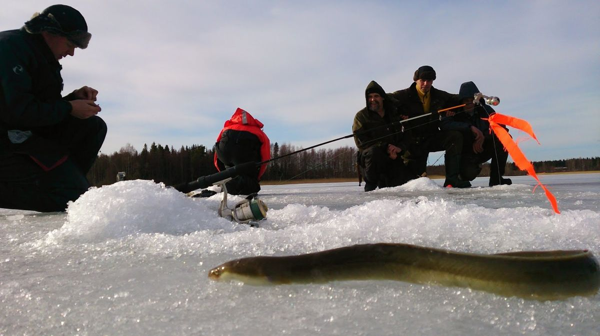

Kalalajit · Muut lajit
Ankerias
Näin pyydät
- Pyyntitavat
- Pohjaonki
- Koukkukoko
- 2–10 mitä tämä tarkoittaa?
- Syötti
- Kalanpala, matonippu
- Lue lisää
- www.nationalanguillaclub.co.uk


Muut muut lajit
Ahven · Elaska · Hauki · Imukala · Isotuulenkala · Kiiski · Kilohaili · Kivinilkka · Made · Nokkakala · Piikkimonni · Pikkutuulenkala · Rasvakala · Silakka · Siloneula · Siperiansampi · Särmäneula · Teisti · Turska